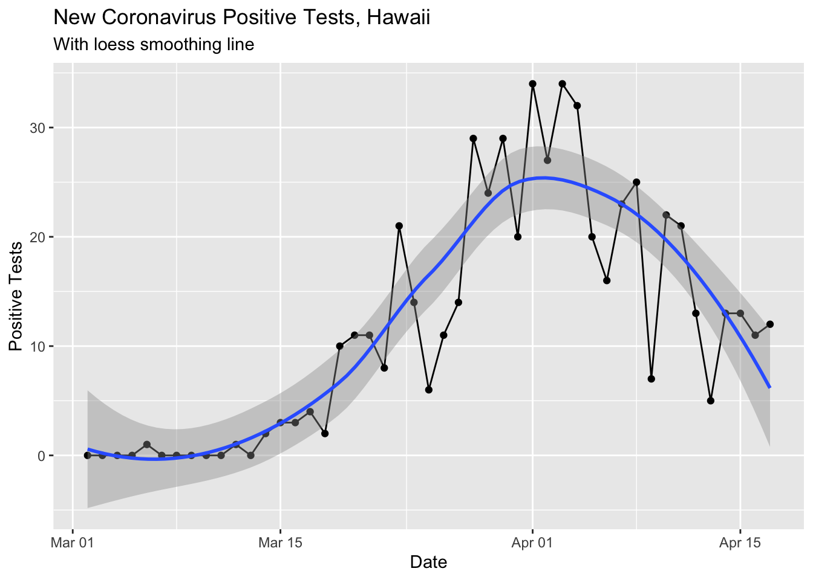
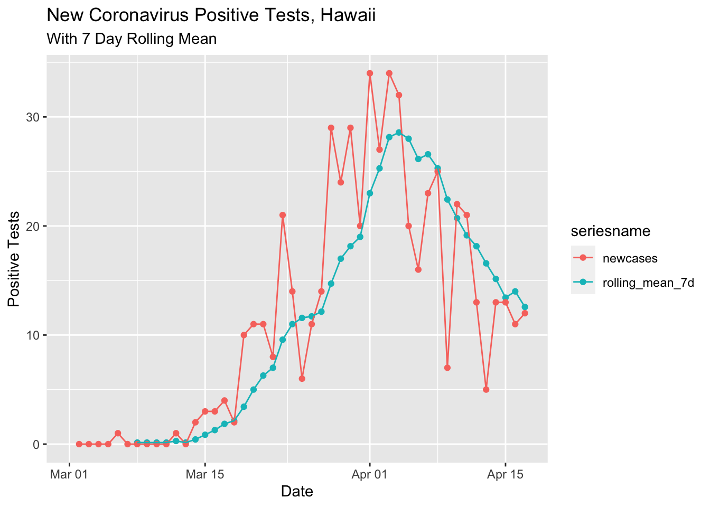
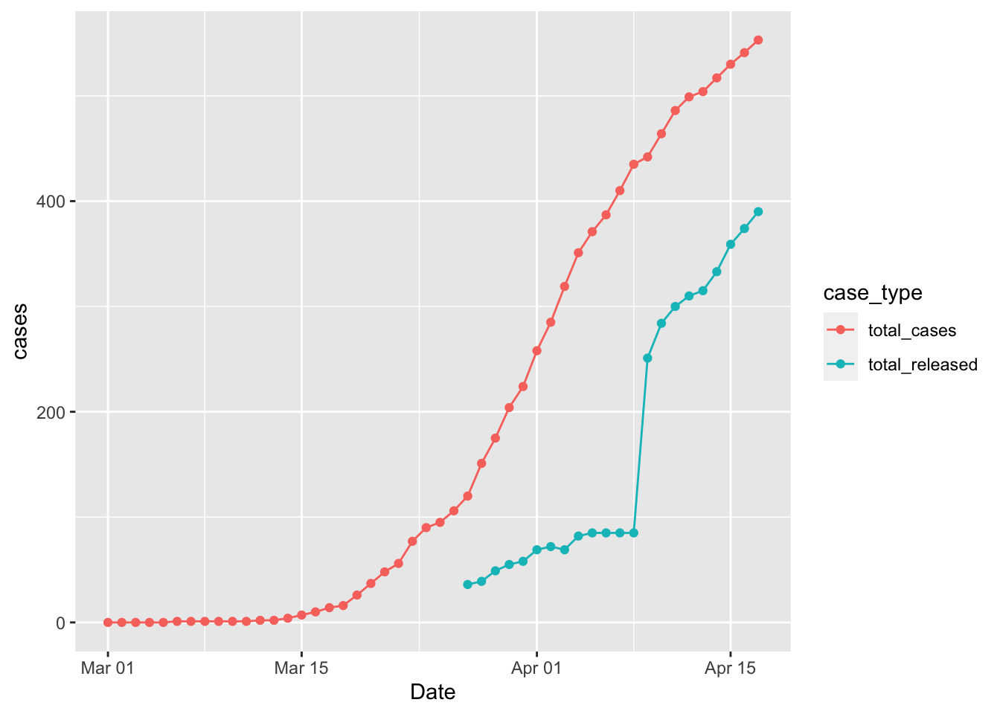
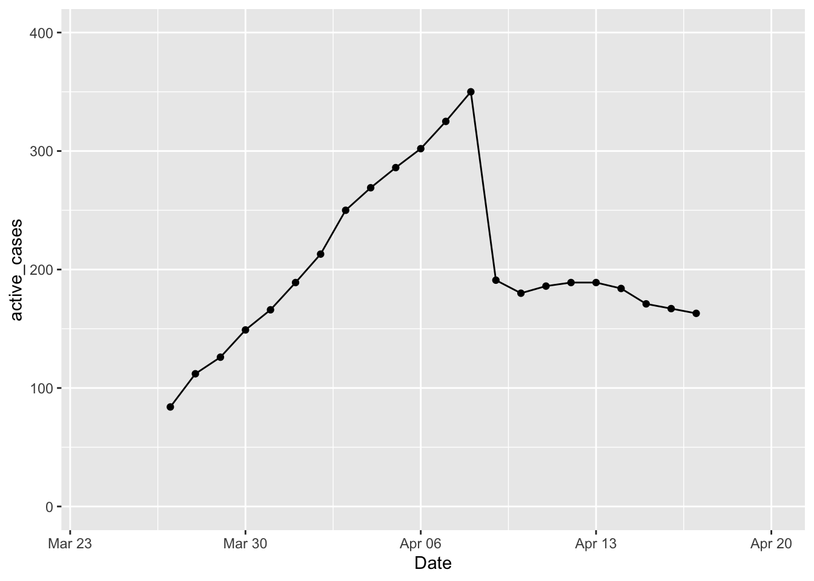
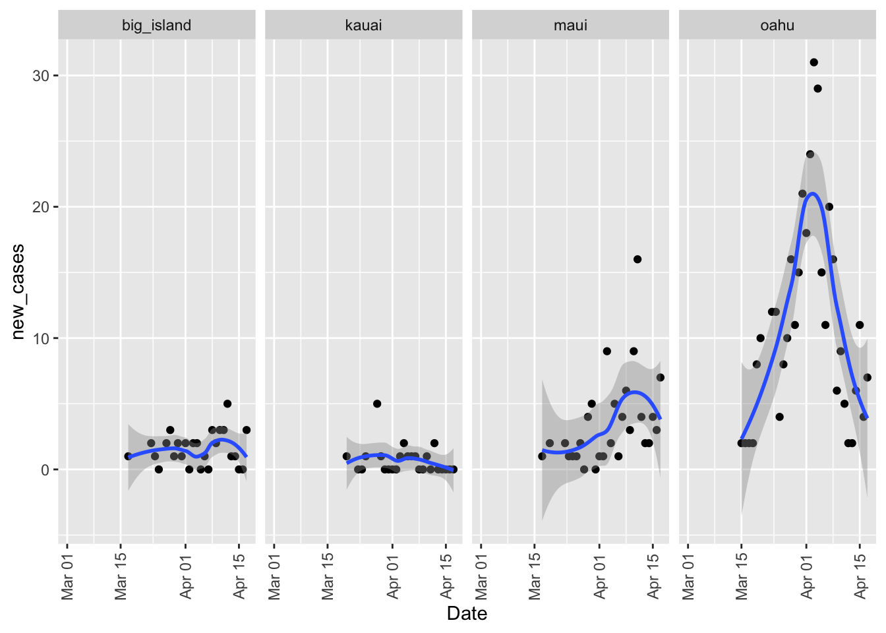

Here’s some more of my efforts to look at the local coronavirus data. I also thought it would be helpful to update the numbers this weekend since they look to have plateaued a bit this past week. In this post I look at the released cases versus the total to see how many active cases are still being tracked. I also look at the new cases by island since there were a couple of clusters on the Big Island and Maui.
Packages
library(dplyr)##
## Attaching package: 'dplyr'## The following objects are masked from 'package:stats':
##
## filter, lag## The following objects are masked from 'package:base':
##
## intersect, setdiff, setequal, unionlibrary(ggplot2)
library(lubridate)##
## Attaching package: 'lubridate'## The following object is masked from 'package:base':
##
## datelibrary(scales)
library(tidyr)
library(zoo)##
## Attaching package: 'zoo'## The following objects are masked from 'package:base':
##
## as.Date, as.Date.numericData Download
covid <- readr::read_csv('https://covid19-hawaii.herokuapp.com/hawaii_daily.sqlite/hawaii_daily?_format=csv&_size=max')## Parsed with column specification:
## cols(
## .default = col_double(),
## Date = col_character(),
## `Total Tests` = col_number(),
## `Daily Tests` = col_number(),
## `Total Private Tests` = col_number(),
## `Negative Tests` = col_number(),
## `OHCA Licensed Beds` = col_number(),
## `Non-ICU Beds` = col_number(),
## Source = col_character(),
## `Unnamed: 40` = col_character()
## )## See spec(...) for full column specifications.timestamp() # Data pull time## ##------ Sat Apr 18 13:33:41 2020 ------##Data processing steps.
covid$Date <- mdy(covid$Date)Change per Day
I updated the curves from the last post with both smoothing methods. Here’s the change in our state per day, smoothed with the loess method (regression line fitting).
covid %>% filter(!is.na(`New Cases`)) %>%
ggplot(aes(x = Date, y = `New Cases`)) +
geom_point() +
geom_line() +
geom_smooth() +
labs(title ="New Coronavirus Positive Tests, Hawaii",
subtitle = "With loess smoothing line") +
ylab("Positive Tests")## `geom_smooth()` using method = 'loess' and formula 'y ~ x'
Here’s the 7 day running average.
covid %>% select(Date, `New Cases`) %>%
mutate(rolling_mean_7d = rollmean(`New Cases`, 7, align = 'right', fill = NA)) %>%
mutate(newcases = `New Cases`) %>%
select(Date, newcases, rolling_mean_7d) %>%
gather(`rolling_mean_7d`, `newcases`, key = seriesname, value = cases) %>%
ggplot(aes(x = Date, y = cases, color = seriesname)) +
geom_point() +
geom_line() +
labs(title ="New Coronavirus Positive Tests, Hawaii",
subtitle = "With 7 Day Rolling Mean") +
ylab("Positive Tests")## Warning: Removed 8 rows containing missing values (geom_point).## Warning: Removed 8 row(s) containing missing values (geom_path).
Recovered Cases
Quite a few cases have recovered over the course of the pandemic. I thought it might be nice to see how many cases are recovered versus not recovered. To do this I needed to reshape the data into a tidy format.
covid %>%
select(Date, total_cases = `Total Cases`, total_released = `Total Released`) %>%
# mutate(active_cases = total_cases - total_released) %>%
gather(total_cases, total_released, key = "case_type", value = "cases") %>%
ggplot(aes(x = Date, y = cases, color = case_type)) +
geom_point() +
geom_line()## Warning: Removed 26 rows containing missing values (geom_point).## Warning: Removed 26 row(s) containing missing values (geom_path).
It’s not totally clear why the data in the released cases jumps so much on 4/9/2020.
Here’s another way of looking at the number of cases that are still active (total cases - total released).
covid %>%
select(Date, total_cases = `Total Cases`, total_released = `Total Released`) %>%
mutate(active_cases = total_cases - total_released) %>%
# gather(total_cases, total_released, key = "case_type", value = "cases") %>%
ggplot(aes(x = Date, y = active_cases)) +
geom_point() +
geom_line() +
ylim(0, 400) + xlim(ymd('2020-03-24'), ymd('2020-04-20'))## Warning: Removed 26 rows containing missing values (geom_point).## Warning: Removed 26 row(s) containing missing values (geom_path). This makes it easier to see that as DOH started releasing cases on day 14 of this data collection, there have been between 163 and 189 active cases. Of course this is an underestimate of the true number of contagious people out there.
covid %>% filter(Date > mdy('4-9-2020')) %>%
select(Date, total_cases = `Total Cases`, total_released = `Total Released`) %>%
mutate(active_cases = total_cases - total_released) %>% arrange(active_cases)## # A tibble: 8 x 4
## Date total_cases total_released active_cases
## <date> <dbl> <dbl> <dbl>
## 1 2020-04-17 553 390 163
## 2 2020-04-16 541 374 167
## 3 2020-04-15 530 359 171
## 4 2020-04-10 464 284 180
## 5 2020-04-14 517 333 184
## 6 2020-04-11 486 300 186
## 7 2020-04-12 499 310 189
## 8 2020-04-13 504 315 189Maui and Big Island Clusters
There have been two new clusters of cases on Maui and the Big Island. On Maui the cluster was associated with the hospital and on the Big Island it was associated with McDonalds workers. These two clusters throws off the data a bit because the overall total hides these outbreaks. To look at these we can look at new cases by county.
# str(covid)
covid %>% select(Date,
oahu=`New Oahu Res`,
maui=`New Maui Res`,
big_island=`New HIsland Res`,
kauai=`New Kauai Res`,
non_res=`New Non Res`,
`Unclassified`
) %>%
gather(oahu, maui, big_island, kauai, # non_res, Unclassified,
key = "location",
value = "new_cases") %>%
ggplot(aes(x = Date, y = new_cases)) + facet_grid(. ~location) +
geom_point() +
geom_smooth() +
theme(axis.text.x = element_text(angle=90, vjust=0.5))## `geom_smooth()` using method = 'loess' and formula 'y ~ x'## Warning: Removed 81 rows containing non-finite values (stat_smooth).## Warning: Removed 81 rows containing missing values (geom_point).
Overall you can see the days when those clusters were under serious investigation since the number of positive tests spikes.
License
I didn’t mention it last time, but these data are subject to the following restrictions:
Data license: Creative Commons Attribution 4.0 International · Data source: Community Maintained Daily Hawaii COVID-19 Metrics · About: This is a community maintained, unofficial table of COVID-19 stats compiled from DOH and media reports. Accuracy is not guaranteed. Please see the Data source link to report any errors.